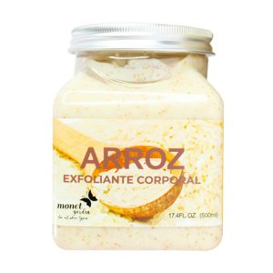
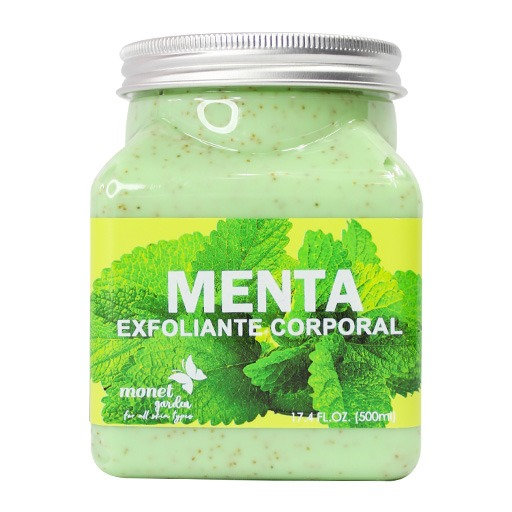
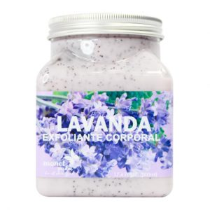

Exfoliante Arroz

Hidrata y suaviza tu piel con este EXFOLIANTE corporal de arroz Elimina células muertas, exceso de grasa, puntos negros y a su vez empareja el tono de la piel.
Exfoliante Menta

Exfoliarse la piel del cuerpo ayuda a mantener la piel mas fina, eliminando las células muertas que opacan la luminosidad natural de tu piel y obstruyen los poros.
Exfoliante Lavanda

Exfoliarse la piel con el exfoliante lavanda ayuda a mantener la piel mas fina, fresca y elimina las células muertas que opacan la luminosidad natural de tu piel y obstruyen los poros.